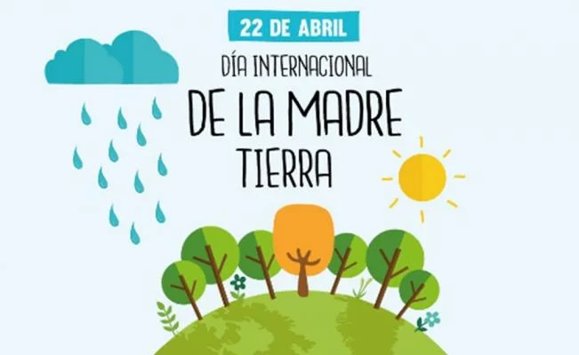

Dia Internacional de la madre Tierra 22 de abril
- 


Realizado por:
Danna Lucero Huerta Herrera
4"G"
Especialidad:
Programación
Submódulo:
Desarrolla Aplicaciones Móviles
Docente:
Lic.José Antonio Gómez Hernández
4"G"
Programación
Desarrolla Aplicaciones Móviles
Lic.José Antonio Gómez Hernández
Celebramos el día Internacional de la Tierra para recordar que el planeta y sus ecosistemas nos dan la vida y el sustento.Con este día, asumismos, además, la responsabilidad colectiva, como nos recordaba la Declaración de Río de 1992, de fomentar esta armonía con la naturaleza y la Madre Tierra.
Este día nos brindda también la oportunidad de concienciar a todos los habitantes del planeta acerca de los problemas que afectan a la Tierra y a las diferentes formas de vida que se desarrollan.
En 1968, Morton Hilbert y el U.S. Public Health Service (Servicio de Salud Pública de E.E.U.U.), organizaron el Simposio de Ecología Humana, se realiza una conferencia por los nombrados anteriormente para una asamblea o conferencia medioambiental para que estudiantes escucharan a científicos hablar sobre los efectos del deterioro ambiental en la salud humana.2 Este fue el primer antecedente del Día de la Tierra. Durante los siguientes dos años, Hilbert y sus estudiantes trabajaron para planear el primer Día de la Tierra. Surgieron otros esfuerzos como Survival Project (Proyecto para la Supervivencia), uno de los primeros eventos educacionales de conciencia ambiental, que fue llevado a cabo en la Universidad Northwestern el 23 de enero de 1970. Este fue el primero de varios eventos realizados en campus universitarios por todo Estados Unidos. Así mismo, Ralph Nader empezó a hablar acerca de la importancia de la ecología en 1970.
La primera manifestación tuvo lugar el 22 de abril de 1970, promovida por el senador y activista ambiental Gaylord Nelson, para la creación de una agencia ambiental. En esta convocatoria participaron dos mil universidades, diez mil escuelas (primarias y secundarias) y centenares de comunidades. La presión social tuvo sus logros y el gobierno de los Estados Unidos creó la Environmental Protection Agency (Agencia de Protección Ambiental) y una serie de leyes destinadas a la protección del medio ambiente.
En 1972 se celebró la primera conferencia internacional sobre el medio ambiente. La Cumbre de la Tierra de Estocolmo cuyo objetivo fue sensibilizar a los líderes mundiales sobre la magnitud de los problemas ambientales.
"Madre Tierra" es una expresión común utilizada para referirse al planeta Tierra en diversos países y regiones, lo que demuestra la interdependencia existente entre los seres humanos, las demás especies vivas y el planeta que todos habitamos.
La Tierra y sus ecosistemas son nuestro hogar. Para alcanzar un justo equilibrio entre las necesidades económicas, sociales y ambientales de las generaciones presentes y futuras, es necesario promover la armonía con la naturaleza y el planeta.
Este día nos brinda también la oportunidad de concienciar a todos los habitantes del planeta acerca de los problemas que afectan a la Tierra y a las diferentes formas de vida que en él se desarrollan.
En 2009, la Asamblea General de las Naciones Unidas proclamó el 22 de abril como el Día Internacional de la Madre Tierra. Al hacerlo, los Estados miembros reconocieron que la Tierra y sus ecosistemas son nuestro hogar común y expresaron su convicción de que es necesario promover la Armonía con la Naturaleza para lograr un equilibrio justo entre las necesidades económicas, sociales y ambientales del presente y del futuro. generaciones El mismo año, la Asamblea General aprobó su primera resolución sobre Armonía con la Naturaleza.
La Asamblea General ha reconocido ampliamente que el agotamiento mundial de los recursos naturales y la rápida degradación ambiental son el resultado de patrones de consumo y producción insostenibles que han llevado a consecuencias adversas tanto para la Tierra como para la salud y el bienestar general de la humanidad. La comunidad científica tiene evidencia bien documentada de que nuestra forma de vida actual, en particular nuestros patrones de consumo y producción, ha afectado gravemente la capacidad de carga de la Tierra.

La Conferencia de las Naciones Unidas sobre el Medio Humano de 1972 celebrada en Estocolmo sentó las bases de la toma de conciencia mundial sobre la relación de interdependencia entre los seres humanos, otros seres vivos y nuestro planeta. Asimismo, se estableció el 5 de junio como el Día Mundial del Medio Ambiente y se creó el Programa de las Naciones Unidas para el Medio Ambiente (PNUMA), la agencia de la ONU encargada de establecer la agenda ambiental a nivel global, promover la implementación coherente de la dimensión ambiental del desarrollo sostenible en el sistema de las Naciones Unidas y actuar como un defensor autorizado del medio ambiente.
En el año 2005, la Asamblea General declaró 2008 como el Año Internacional del Planeta Tierra para promover la enseñanza de las ciencias de la Tierra para facilitar a la humanidad los instrumentos necesarios para el uso sostenible de los recursos naturales y para construir la infraestructura científica esencial para el desarrollo sostenible.